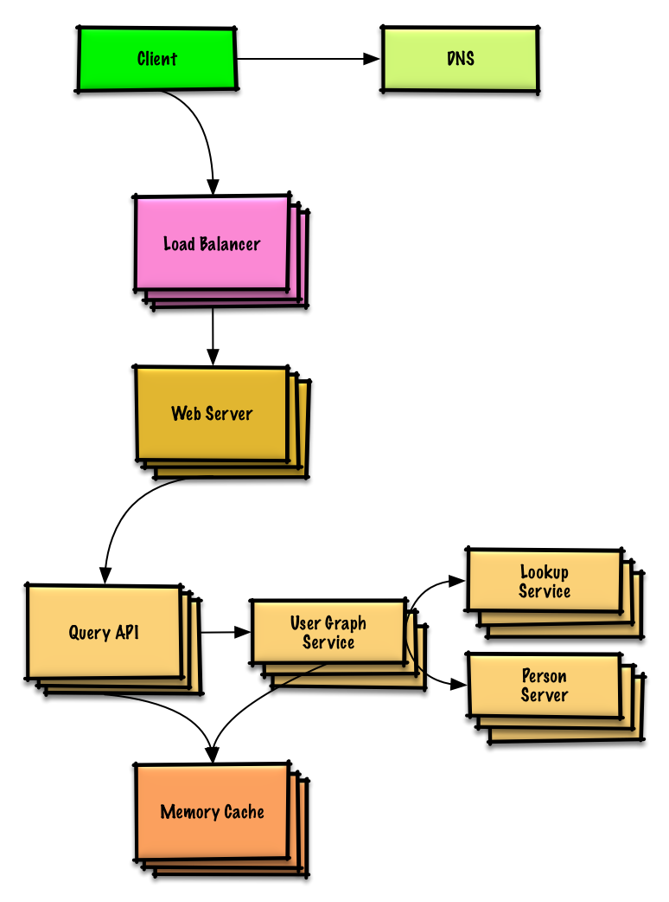
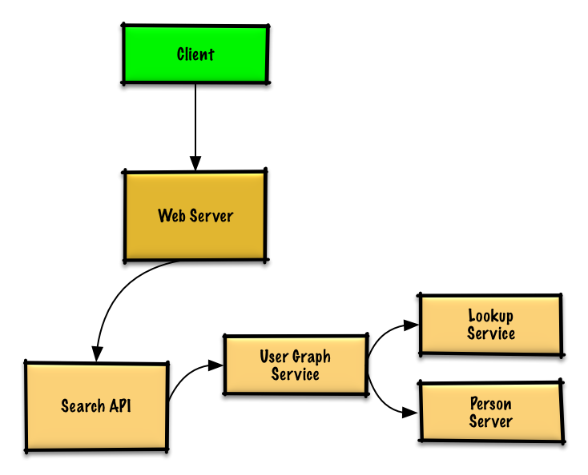

MODULE 14 · SYSTEM DESIGN SOLUTION
Solution to the exercise: "Design the data structures for a social network"
The whole exercise, deliberately: find the shortest chain of friends between two people — "degrees of separation" — without reaching for a purpose-built graph database. The constraint is the point: it forces you to think about sharding a graph across machines.

If the graph fit in memory on one machine, this would just be unweighted shortest-path BFS:
class Graph(Graph):
def shortest_path(self, source, dest):
if source is None or dest is None:
return None
if source is dest:
return [source.key]
prev_node_keys = self._shortest_path(source, dest)
if prev_node_keys is None:
return None
else:
path_ids = [dest.key]
prev_node_key = prev_node_keys[dest.key]
while prev_node_key is not None:
path_ids.append(prev_node_key)
prev_node_key = prev_node_keys[prev_node_key]
return path_ids[::-1]
def _shortest_path(self, source, dest):
queue = deque()
queue.append(source)
prev_node_keys = {source.key: None}
source.visit_state = State.visited
while queue:
node = queue.popleft()
if node is dest:
return prev_node_keys
prev_node = node
for adj_node in node.adj_nodes.values():
if adj_node.visit_state == State.unvisited:
queue.append(adj_node)
prev_node_keys[adj_node.key] = prev_node.key
adj_node.visit_state = State.visited
return NoneBut 100 million users won't fit on one machine. So users (vertices) get sharded across many Person Servers, and a Lookup Service maps a person id to the server that holds them.
friend_ids# -*- coding: utf-8 -*-
from collections import deque
from enum import Enum
class State(Enum):
unvisited = 0
visited = 1
class Graph(object):
def bfs(self, source, dest):
if source is None:
return False
queue = deque()
queue.append(source)
source.visit_state = State.visited
while queue:
node = queue.popleft()
print(node)
if dest is node:
return True
for adjacent_node in node.adj_nodes.values():
if adjacent_node.visit_state == State.unvisited:
queue.append(adjacent_node)
adjacent_node.visit_state = State.visited
return False
class Person(object):
def __init__(self, id, name):
self.id = id
self.name = name
self.friend_ids = []
class LookupService(object):
def __init__(self):
self.lookup = {} # key: person_id, value: person_server
def get_person(self, person_id):
person_server = self.lookup[person_id]
return person_server.people[person_id]
class PersonServer(object):
def __init__(self):
self.people = {} # key: person_id, value: person
def get_people(self, ids):
results = []
for id in ids:
if id in self.people:
results.append(self.people[id])
return results
class UserGraphService(object):
def __init__(self, person_ids, lookup):
self.lookup = lookup
self.person_ids = person_ids
self.visited_ids = set()
def bfs(self, source, dest):
# Use self.visited_ids to track visited nodes
# Use self.lookup to translate a person_id to a Person
passA fuller sketch of the sharded BFS, including the full Lookup/Person/UserGraphService trio and the path-reconstruction logic:
class LookupService(object):
def __init__(self):
self.lookup = self._init_lookup() # key: person_id, value: person_server
def _init_lookup(self):
...
def lookup_person_server(self, person_id):
return self.lookup[person_id]
class PersonServer(object):
def __init__(self):
self.people = {} # key: person_id, value: person
def add_person(self, person):
...
def people(self, ids):
results = []
for id in ids:
if id in self.people:
results.append(self.people[id])
return results
class Person(object):
def __init__(self, id, name, friend_ids):
self.id = id
self.name = name
self.friend_ids = friend_ids
class UserGraphService(object):
def __init__(self, lookup_service):
self.lookup_service = lookup_service
def person(self, person_id):
person_server = self.lookup_service.lookup_person_server(person_id)
return person_server.people([person_id])
def shortest_path(self, source_key, dest_key):
if source_key is None or dest_key is None:
return None
if source_key is dest_key:
return [source_key]
prev_node_keys = self._shortest_path(source_key, dest_key)
if prev_node_keys is None:
return None
else:
path_ids = [dest_key]
prev_node_key = prev_node_keys[dest_key]
while prev_node_key is not None:
path_ids.append(prev_node_key)
prev_node_key = prev_node_keys[prev_node_key]
return path_ids[::-1]
def _shortest_path(self, source_key, dest_key, path):
source = self.person(source_key)
queue = deque()
queue.append(source)
prev_node_keys = {source_key: None}
visited_ids = set()
visited_ids.add(source.id)
while queue:
node = queue.popleft()
if node.key is dest_key:
return prev_node_keys
prev_node = node
for friend_id in node.friend_ids:
if friend_id not in visited_ids:
friend_node = self.person(friend_id)
queue.append(friend_node)
prev_node_keys[friend_id] = prev_node.key
visited_ids.add(friend_id)
return None$ curl https://social.com/api/v1/friend_search?person_id=1234
→ [{"person_id":"100","name":"foo","link":"https://social.com/foo"},
{"person_id":"53","name":"bar","link":"https://social.com/bar"}, ...]
Internal service-to-service calls would reasonably use RPC instead of REST.

The ~400 average search requests/sec push toward a Memory Cache in front of person data — especially valuable for well-connected users and for anyone doing repeated searches (memory reads run ~250μs vs. 4x on SSD, 80x on disk).
The graph-specific optimizations are the interesting part of this one:
Next in Module 14: Query cache (key-value search store). Previous: Mint.com.